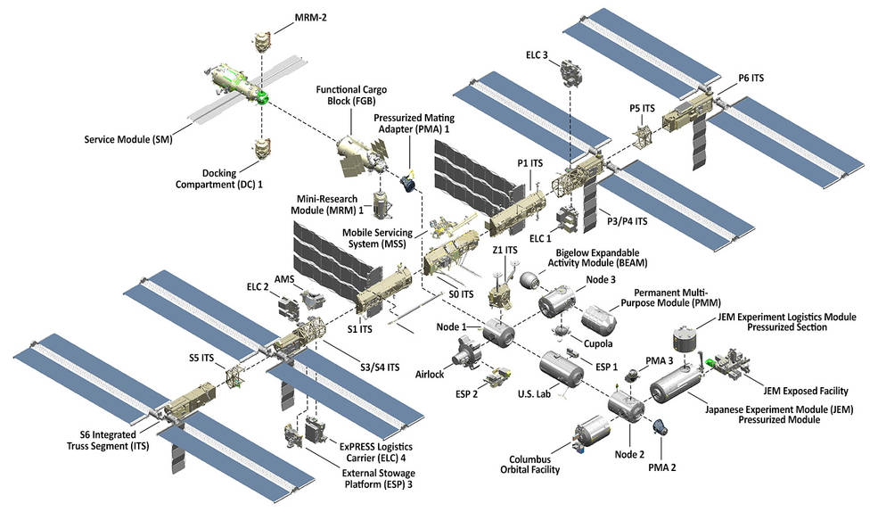

Facts about the ISS
- 240 individuals from 19 countries have visited the International Space Station
- The space station has been continuously occupied since November 2000
- An international crew of six people live and work while traveling at a speed of five miles per second, orbiting Earth about every 90 minutes.
- In 24 hours, the space station makes 16 orbits of Earth, traveling through 16 sunrises and sunsets
- Peggy Whitson set the record for spending the most total time living and working in space at 665 days on Sept. 2, 2017
- The acre of solar panels that power the station means sometimes you can look up in the sky at dawn or dusk and see the spaceship flying over your home, even if you live in a big city. Find sighting opportunities at spotthestation.nasa.gov
- The living and working space in the station is larger than a six-bedroom house (and has six sleeping quarters, two bathrooms, a gym, and a 360-degree view bay window).
- To mitigate the loss of muscle and bone mass in the human body in microgravity, the astronauts work out at least two hours a day.
- Astronauts and cosmonauts have conducted more than 221 spacewalks (and counting!) for space station construction, maintenance and upgrades since December 1998.
- The solar array wingspan (240 feet) is about the same length as the world’s largest passenger aircraft, the Airbus A380.
- The large modules and other pieces of the station were delivered on 42 assembly flights, 37 on the U.S. space shuttles and five on Russian Proton/Soyuz rockets.
- The space station is 357 feet end-to-end, one yard shy of the full length of an American football field including the end zones.
- Eight miles of wire connects the electrical power system aboard the space station.
- The 55-foot robotic Canadarm2 has seven different joints and two end-effectors, or hands, and is used to move entire modules, deploy science experiments and even transport spacewalking astronauts.
- Six spaceships can be connected to the space station at once.
- A spacecraft can arrive at the space station as soon as six hours after launching from Earth.
- Four different cargo spacecraft deliver science, cargo and supplies: Northrop Grumman’s Cygnus, SpaceX’s Dragon, JAXA’s HTV, and the Russian Progress.
- Through Expedition 58, the microgravity laboratory has hosted more than 2,700 research investigations from researchers in more than 103 countries.
- The station’s orbital path takes it over 90 percent of the Earth’s population, with astronauts taking millions of images of the planet below. Check them out at eol.jsc.nasa.gov
- More than 20 different research payloads can be hosted outside the station at once, including Earth sensing equipment, materials science payloads, particle physics experiments like the Alpha Magnetic Spectrometer-02 and more.
- The space station travels an equivalent distance to the Moon and back in about a day.
- The Water Recovery System reduces crew dependence on water delivered by a cargo spacecraft by 65 percent – from about 1 gallon a day to a third of a gallon.
- On-orbit software monitors approximately 350,000 sensors, ensuring station and crew health and safety.
- The space station has an internal pressurized volume equal that of a Boeing 747.
- More than 50 computers control the systems on the space station.
- More than 3 million lines of software code on the ground support more than 1.5 million lines of flight software code.
- In the International Space Station’s U.S. segment alone, more than 1.5 million lines of flight software code run on 44 computers communicating via 100 data networks transferring 400,000 signals (e.g. pressure or temperature measurements, valve positions, etc.).
International Space Station Size & Mass
- Pressurized Module Length: 167.3 feet (73 meters)
- Truss Length: 357.5 feet (109 meters)
- Solar Array Length: 239.4 feet (73 meters)
- Mass: 925,335 pounds (419,725 kilograms)
- Habitable Volume: 13,696 cubic feet (388 cubic meters) not including visiting vehicles
- Pressurized Volume: 32,333 cubic feet (916 cubic meters)
- With BEAM expanded: 32,898 cubic feet (932 cubic meters)
- Power Generation: 8 solar arrays provide 75 to 90 kilowatts of power
- Lines of Computer Code: approximately 2.3 million